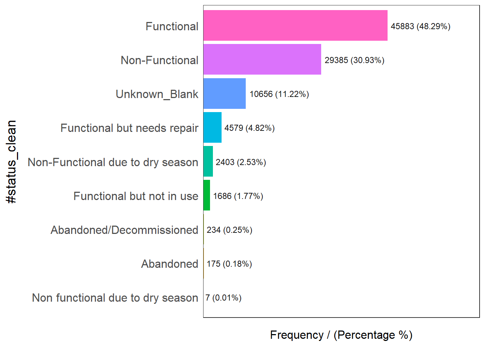
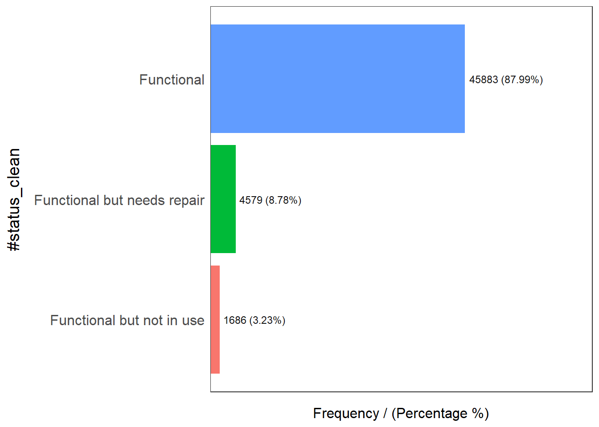
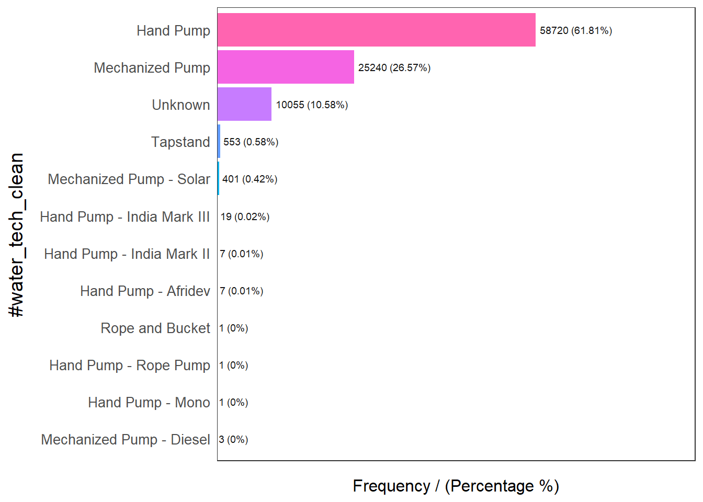
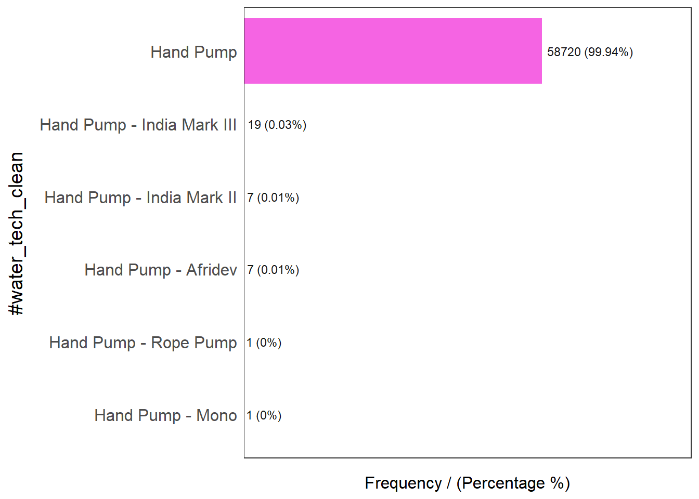

pacman::p_load(rgdal, spdep, tmap, sf, ClustGeo, funModeling,
ggpubr, cluster, factoextra, NbClust,
heatmaply, corrplot, psych, tidyverse, GGally)Take Home Ex 2 : Regionalization of Multivariate Water Point Attributes with Non-spatially Constrained and Spatially Constrained Clustering Methods.
1. Setting the scene.
The process of creating regions is called regionalisation. A regionalisation is a special kind of clustering where the objective is to group observations which are similar in their statistical attributes, but also in their spatial location. In this sense, regionalization embeds the same logic as standard clustering techniques, but also applies a series of geographical constraints. Often, these constraints relate to connectivity: two candidates can only be grouped together in the same region if there exists a path from one member to another member that never leaves the region. These paths often model the spatial relationships in the data, such as contiguity or proximity. However, connectivity does not always need to hold for all regions, and in certain contexts it makes sense to relax connectivity or to impose different types of geographic constraints.
2. Objectives.
In this take-home exercise we are going to regionalize Nigeria by using following measures :
Total number of functional water points.
Total number of nonfunctional water points.
Percentage of functional water points.
Percentage of non-functional water points.
Percentage of main water point technology (i.e. Hand Pump).
Percentage of usage capacity (i.e. < 1000, >=1000).
Percentage of rural water points.
3. Installing and loading required packages.
Before we get started, it is important for us to install the necessary R packages into R and launch these R packages into R environment.
The R packages needed for this exercise are as follows:
Spatial data handling using sf, rgdal and spdep
Attribute data handling using tidyverse, especially readr, ggplot2 and dplyr. tidyverse for importing and processing non-spatial data. In this exercise, readr package will be used for importing wkt data and dplyr package will be used to wrangling the data
Choropleth mapping using tmap
Multivariate data visualisation and analysis using coorplot, ggpubr, and heatmaply
Cluster analysis cluster and ClustGeo
The code chunks below installs and launches these R packages into R environment.
4. Importing Data.
4.1 Importing Water point Data.
wp_nga <- read_csv("data/aspatial/Water_Point.csv") %>%
filter(`#clean_country_name` == "Nigeria")Rows: 1048575 Columns: 70
── Column specification ────────────────────────────────────────────────────────
Delimiter: ","
chr (44): #source, #report_date, #status_id, #water_source_clean, #water_sou...
dbl (24): row_id, #lat_deg, #lon_deg, #install_year, #rehab_year, #fecal_col...
lgl (2): is_urban, latest_record
ℹ Use `spec()` to retrieve the full column specification for this data.
ℹ Specify the column types or set `show_col_types = FALSE` to quiet this message.Thing to learn from the code chunk above:
The original file name is called Water_Point_Data_Exchange_-PlusWPdx.csv, it has been rename to Water_Point.csv for easy encoding.
Instead of using
read.csv()of Base R to import the csv file into R,read_csv()is readr package is used. This is because during the initial data exploration, we notice that there is at least one field name with space between the field name (ie. New Georeferenced Column)The data file contains water point data of many countries. In this study, we are interested on water point in Nigeria on. Hence,
filter()of dplyr is used to extract out records belong to Nigeria only.
5. Convert wkt data.
After the data are imported into R environment, it is a good practice to review both the data structure and the data table if it is in tibble data frame format in R Studio.
Notice that the newly imported tibble data frame (i.e. wp_nga) contains a field called New Georeferenced Column which represent spatial data in a textual format. In fact, this kind of text file is popularly known as Well Known Text in short wkt.
Two steps will be used to convert an asptial data file in wkt format into a sf data frame by using sf.
First, st_as_sfc() of sf package is used to derive a new field called Geometry as shown in the code chunk below.
wp_nga$Geometry = st_as_sfc(wp_nga$`New Georeferenced Column`)Next, st_sf() will be used to convert the tibble data frame into sf data frame.
wp_sf <- st_sf(wp_nga, crs=4326) 5. Importing Nigeria LGA level boundary data.
For the purpose of this exercise, shapefile downloaded from geoBoundaries portal will be used.
nga <- st_read(dsn = "data\\geospatial\\geoBoundaries-NGA-ADM2-all",
layer = "geoBoundaries-NGA-ADM2",
crs = 4326) Reading layer `geoBoundaries-NGA-ADM2' from data source
`C:\Yogendra345\ISSS624_A01\TakeHome_Ex02\data\geospatial\geoBoundaries-NGA-ADM2-all'
using driver `ESRI Shapefile'
Simple feature collection with 774 features and 5 fields
Geometry type: MULTIPOLYGON
Dimension: XY
Bounding box: xmin: 2.668534 ymin: 4.273007 xmax: 14.67882 ymax: 13.89442
Geodetic CRS: WGS 84summary(nga) shapeName Level shapeID shapeGroup
Length:774 Length:774 Length:774 Length:774
Class :character Class :character Class :character Class :character
Mode :character Mode :character Mode :character Mode :character
shapeType geometry
Length:774 MULTIPOLYGON :774
Class :character epsg:4326 : 0
Mode :character +proj=long...: 0 nga <- nga %>% select(shapeName)6. Point in Polygon Overlay.
Although wp_sf sf data frame consists of a field called #clean_adm2 which by right should provides the LGA name of the water point located. However, it is always a good practice to exercise more caution when dealing with data accuracy.
In this section, we are going to use a geoprocessing function (or commonly know as GIS analysis) called point-in-polygon overlay to transfer the attribute information in nga sf data frame into wp_sf data frame.
wp_sf <- st_join(wp_sf, nga)Notice that a new field called shapeName has been added into wp_sf sf data frame. as shown below.

7. Derive new variables using dplyr package.
7.1 Exploratory Data Analysis.
Exploratory Data Analysis (EDA) is a crucial technique to understand insights of the data.
freq function of funmodelling package helps to understand different types of water points as shown below.
Note - Data Cleaning purpose, I have marked blank rows in column #status_clean as ‘Unknown_Blank’ to make it clear in the distribution graph below.
freq(data=wp_sf,
input = '#status_clean')Warning: The `<scale>` argument of `guides()` cannot be `FALSE`. Use "none" instead as
of ggplot2 3.3.4.
ℹ The deprecated feature was likely used in the funModeling package.
Please report the issue at <https://github.com/pablo14/funModeling/issues>.
#status_clean frequency percentage cumulative_perc
1 Functional 45883 48.29 48.29
2 Non-Functional 29385 30.93 79.22
3 Unknown_Blank 10656 11.22 90.44
4 Functional but needs repair 4579 4.82 95.26
5 Non-Functional due to dry season 2403 2.53 97.79
6 Functional but not in use 1686 1.77 99.56
7 Abandoned/Decommissioned 234 0.25 99.81
8 Abandoned 175 0.18 99.99
9 Non functional due to dry season 7 0.01 100.007.2 Extracting Functional Water Points.
In the code chunk below, filter() of dplyr is used to select functional water points.
wpt_functional <- wp_sf %>%
filter(`#status_clean` %in%
c("Functional",
"Functional but not in use",
"Functional but needs repair"))Here we run freq function of funmodelling package to understand distribution of ‘functional’ water points.
freq(data=wpt_functional,
input = '#status_clean')
#status_clean frequency percentage cumulative_perc
1 Functional 45883 87.99 87.99
2 Functional but needs repair 4579 8.78 96.77
3 Functional but not in use 1686 3.23 100.007.3 Extracting non-functional water point.
In the code chunk shown below, filter() of dplyr is used to select non-functional water points.
wpt_nonfunctional <- wp_sf %>%
filter(`#status_clean` %in%
c("Abandoned/Decommissioned",
"Abandoned",
"Non-Functional",
"Non functional due to dry season",
"Non-Functional due to dry season"
))Let us understand distribution of ‘Non-functional’ water-points in graphical format.
freq(data=wpt_nonfunctional,
input = '#status_clean')
#status_clean frequency percentage cumulative_perc
1 Non-Functional 29385 91.25 91.25
2 Non-Functional due to dry season 2403 7.46 98.71
3 Abandoned/Decommissioned 234 0.73 99.44
4 Abandoned 175 0.54 99.98
5 Non functional due to dry season 7 0.02 100.007.3 Extracting water point with Unknown class.
In the code chunk below, filter() of dplyr is used to select water points with unknown status.
wpt_unknown <- wp_sf %>%
filter(`#status_clean` == "Unknown")Conclusion –> There are no water points with “Unknown” status.
7.4 Understand distribution of water point technology.
Let us plot the distribution of ‘#water_tech_category’ using freq() function.
Note - We can choose ‘#water_tech_clean” column also - if we want to further explore type of ’Hand-Pumps’ as shown below. However for this exercise purpose, I will restrict myself to ‘#water_tech_category’ only & following graph is just for knowledge purpose.
freq(data = wp_sf,
input = '#water_tech_clean')
#water_tech_clean frequency percentage cumulative_perc
1 Hand Pump 58720 61.81 61.81
2 Mechanized Pump 25240 26.57 88.38
3 Unknown 10055 10.58 98.96
4 Tapstand 553 0.58 99.54
5 Mechanized Pump - Solar 401 0.42 99.96
6 Hand Pump - India Mark III 19 0.02 99.98
7 Hand Pump - Afridev 7 0.01 99.99
8 Hand Pump - India Mark II 7 0.01 100.00
9 Mechanized Pump - Diesel 3 0.00 100.00
10 Hand Pump - Mono 1 0.00 100.00
11 Hand Pump - Rope Pump 1 0.00 100.00
12 Rope and Bucket 1 0.00 100.00freq(data = wp_sf,
input = '#water_tech_category') #water_tech_category frequency percentage cumulative_perc
1 Hand Pump 58755 61.84 61.84
2 Mechanized Pump 25644 26.99 88.83
3 Unknown 10055 10.58 99.41
4 Tapstand 553 0.58 99.99
5 Rope and Bucket 1 0.00 100.00wpt_handpump <- wp_sf %>%
filter(`#water_tech_category` %in%
c("Hand Pump - Afridev",
"Hand Pump - Vergnet",
"Hand Pump",
"Hand Pump - Nira",
"Hand Pump - India Mark II",
"Hand Pump - India Mark III",
"Hand Pump - EMAS",
"Hand Pump - India Mark",
"Hand Pump - PHE-6",
"Hand Pump - Mono",
"Hand Pump - Climax",
"Hand Pump - Rope Pump",
"Hand Pump - Tara",
"Hand Pump - Consallen",
"Hand Pump - Kardia",
"Hand Pump - SWN 80",
"Hand Pump - PB Mark II",
"Hand Pump - Walimi",
"Hand Pump - Blue",
"Hand Pump - Malda",
"Hand Pump - Inkar"))Let us see the distribution of the ‘Hand Pumps’
freq(data = wpt_handpump,
input = '#water_tech_clean')
#water_tech_clean frequency percentage cumulative_perc
1 Hand Pump 58720 99.94 99.94
2 Hand Pump - India Mark III 19 0.03 99.97
3 Hand Pump - Afridev 7 0.01 99.98
4 Hand Pump - India Mark II 7 0.01 99.99
5 Hand Pump - Mono 1 0.00 99.99
6 Hand Pump - Rope Pump 1 0.00 100.008. Performing Point-in-Polygon Count.
nga_wp_sf <- wp_sf %>%
mutate(`total wpt` = lengths(
st_intersects(wp_sf, wp_sf))) %>%
mutate(`wpt functional` = lengths(
st_intersects(wp_sf, wpt_functional))) %>%
mutate(`wpt non-functional` = lengths(
st_intersects(wp_sf, wpt_nonfunctional)))